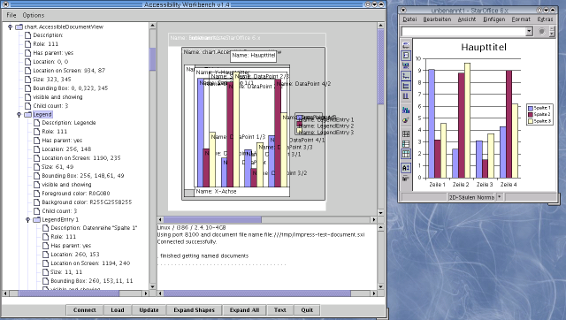

Accessibility Work Bench
A test tool for the UNO Accessibility APILast changed on April 25th 2003
Introduction
The Accessibility Work Bench, or AWB for short, is a tool for testing the accessibility implementation of OpenOffice/StarOffice that uses the UNO Accessibility API (UAA) directly. There are other tools that use the Java Accessibility API (JAA). The AWB is implemented in Java. Its purpose is to give developers of the UAA a tool to aid them in testing and debugging their implementation.
Latest Version is 1.7
The current version is 1.7. The CVS tag is v1_7. Changes since the last version are:- Integrated move of UAA files from drafts to final.
- Control left click in the graphical view expands the object that has been clicked at.
- Introduction of split panes for easily changing the size of the three main widgets.
- The graphical view visualizes the screen size.
- Removed the "Load" button.
- Removed the status line.
- New "views" menu that allows you to select the zoom scale of the graphical view.
- New "help" menu gives access to some (hopefully) helpful information.
Start Up
First be sure to compile the java source code by simply calling dmake.
Before you start the AWB make sure that you have an Office running that
accepts connections from outside. Start the Office like
soffice
"-accept=socket,host=localhost,port=5678;urp;".
If you are unhappy with the port number you can change that but remember to
tell the AWB of this. There are two ways to start the AWB:
- From a solar environment just call
dmake run. - Otherwise you have to specify the place of all necessary jar files with
java -classpath .:<path-to-jar-files>/unoil.jar:<path-to-jar-files>/sandbox.jar:<path-to-jar-files>/ridl.jar:<path-to-jar-files>/jurt.jar:<path-to-jar-files>/juh.jar:<path-to-jar-files>/java_uno.jar AccessibilityWorkBenchwhere <path-to-jar-files> has to be replaced with the name of the path where the jar file live. So, if you an office installed at/home/af/officethen the command line isjava -classpath .:/home/af/office/program/classes/unoil.jar:/home/af/office/program/classes/sandbox.jar:/home/af/office/program/classes/ridl.jar:/home/af/office/program/classes/jurt.jar:/home/af/office/program/classes/juh.jar:/home/af/office/program/classes/java_uno.jar AccessibilityWorkBench.
The AWB understands one option:
- -p <port-number> changes the port number at which the AWB tries to connect to the Office. It defaults to 5678.
Graphical User Interface
The (somewhat outdated) image shows a screenshot of the AWB displaying the accessibility information of a char document. The most important parts of the AWB GUI are:
- The tree view on the left side displays the accessibility tree. The nodes on the second level represent the document windows of the Office. Nodes on higher levels represent parts of these documents. Double left clicking on a tree node expands it. This may take a while because the tool reads information about each new child node from the Office. Leafs of the tree show information about details of the various UAA interfaces. Single left clicks on an internal node highlights the corresponding graphical representation. Right (OS dependant) clicking on a node pops up a context sensitive menu that allows you to expand the subtree (all nodes or just the shapes) or to do other, context dependant, things.
- The graphical view of the accessibility objects is located on the right side of the tree view. The objects are shown with their bounding boxes outlined or filled with the colors derived from the XAccessibleExtendedComponent interface. If that is not supported default colors are used. An object is drawn filled if it contains no children and draw as a rectangle when it does. Holding the shift key while moving the mouse highlights the object the mouse pointer is over. Also the corresponding node in the tree view is selected. The same is done for a left click (without a modifier.) Name and description are shown if not deselected in the option menu.
- Into the output area below the graphical view various messages are printed indicating success or failure of certain operations or that give feedback during longer operations. If for instance no Office can be found to which the AWB can connect it says so in this area and prints the command line argument that you can use to start the Office in a way that allows connection to the AWB.
- The status line below the text and the graphical view shows temporary messages indicating what goes on in the AWB.
- The button bar at the bottom contains the following buttons:
- Connect connects to an Office that has been started after the AWB. A connection with an already running Office is established automatically at start up time.
- Update Clears tree view and graphical view and re-reads the visible document windows. Use this button after loading a new document into the Office to tell the AWB of it.
- Expand Shapes expands all nodes in the tree view that represent draw shapes. Use the context menu to expand shapes more selectively.
- Expand All expands all nodes in the tree view. Use the context menu to expand nodes more selectively.
- Quit exits from the AWB without asking for confirmation.
For up-to-date information please refer to the help text that is accessible through the Help->Help menu item.
Download
The source code of the AWB is located in the test/accessibility directory of the toolkit project. You have to do a checkout from the CVS repository with a command likecvs checkout toolkit/test/accessibility after
setting up the proper CVS server and logging in to it. Use a tag like v1_7
to check out a specific version. You can browse it here.